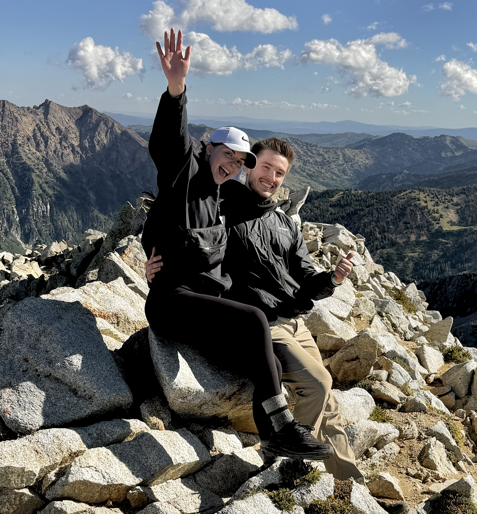

About Me
From the moment I started working with data as an undergraduate research assistant at BYU, I was hooked. Digging into large datasets, using R to uncover patterns, and turning raw numbers into compelling visual stories became so natural to me. You may be interested to know that I originally was pursuing a field in clinical research and psychology. However, I became more inclined to learn appropriate methods to prepare data that would drive change and progress in the world. Now, as a data analyst, I work with SQL and R to clean, analyze, and visualize data, always eager to sharpen my skills and explore new tools. I hope that you find my projects and contributions to data meaningful and insightful. I always appreciate feedback, advice, and engagement with my work which you can find on GitHub.

Outside of my data world, I love to climb the Utah mountain peaks, spend time with my wife, and read a good book—all of
which challenge me to see the world from new perspectives and grow. I fully embrace the idea that setbacks make me
a better person. Indeed, learning new data tools comes with all sorts of setbacks. Learning R and SQL was easily the most daunting
task in my professional development. However, just like the effort and training it takes to hike these towering mountains in the
Wasatch, it opens up new abilities and talents I didn't even know I had. Now, analyzing data is like riding a bike, except now its time to
pedal even faster.
"Climb the mountain not to plant your flag, but to embrace the challenge, enjoy the air, and behold the view. Climb
it so you can see the world, not so the world can see you." - David McCullough Jr.
Location
Orem, UT